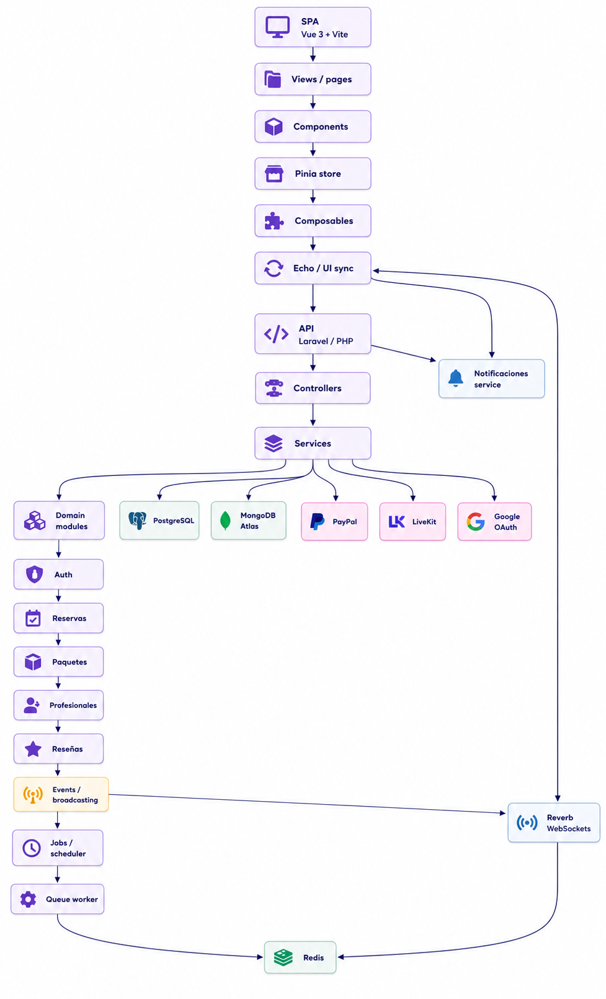
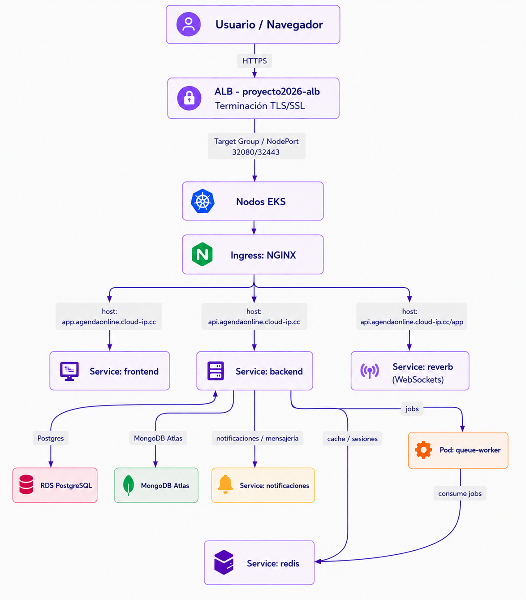
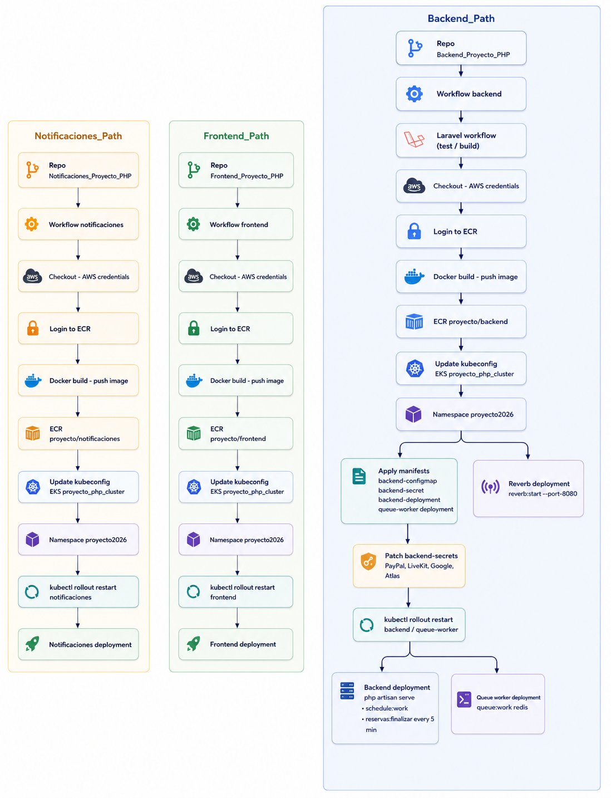

Software, infraestructura y despliegue del proyecto
AgendaOnline
Ordenados como pediste: primero el diagrama de software, luego el de infraestructura y al final el de deployment. La idea es que se lea de forma clara y se vea prolijo tanto en escritorio como en celular.
Capas de la SPA, el backend, los servicios y la comunicación en tiempo real.

Entrada por ALB, nodos EKS, Ingress NGINX y servicios internos de la plataforma.

Flujo completo desde GitHub Actions hasta ECR y el redeploy de backend, frontend y notificaciones.

Si querés, después también te lo dejo con un índice arriba para saltar a cada diagrama.